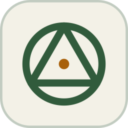

Загрузка…
Перезагрузить
Abax
/
Поделиться
В кабинет Tutor
Tutor
100%
Эта страница скрыта - участники остались на предыдущей странице
Автор временно скрыл все страницы доски. Доступ откроется автоматически, когда автор включит страницу.
Черновик
· виден только вам: ни гостям, ни в демонстрации